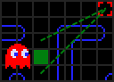

"BLINKY"
"BLINKY" "PINKY"
"PINKY" "INKY"
"INKY" "CLYDE"
"CLYDE" "АВТОР САЙТА"
"АВТОР САЙТА"ОБЩЕЕ О ПРИЗРАКАХ
«Ну, игра про еду — не такое уж большое развлечение, поэтому мы решили вдохнуть немного волнения и напряжения
и добавили врагов. Игрок должен был бороться с ними, чтобы получить пищу. Каждый из врагов имеет собственный
характер. Враги — это четыре маленьких монстра, по форме напоминающие привидения, каждый своего цвета — синего,
оранжевого, розового и красного. Я использовал четыре разных цвета в основном для того, чтобы привлечь к игре
девочек, я думал им понравятся разные цвета»
— Toru Iwatani, создатель Pac-Man
Каждый из призраков индивидуален, каждый использует свой алгоритм для определения маршрута. Понимание поведения каждого призрака очень важно для того, чтобы эффективно их избегать. Однако, перед тем как приступить к описанию индивидуальных особенностей, для начала посмотрим на аспекты поведения, которые у них схожи.
Домик приведений
Когда начинается игра, пакман не сразу же подвергается атаке всех четырех призраков. Как показано на диаграмме начальных позиций игры, только одно привидение начинает преследовать его, пока остальные сидят в небольшой комнатке в центре лабиринта, часто называемой «домом призраков». На уровне сложности, отличном от «новичка», привидения будут возвращаться в него, когда их съест пакман (после принятия энерджайзера), так же они окажутся там, если пакман умрет. Во всех остальных случаях дом привидений недоступен как для игрока, так и для самих призраков. Призраки, выходя из дома, всегда начинают двигаться влево, кроме случаев, которые будут отдельно описаны ниже.
Целевые клетки
 Большая часть механики Pac-Man основана на том, что лабиринт разбит на клетки. «Клетка» в данном контексте —
это квадратик 8х8 пикселей на экране. Разрешение экрана оригинальной игры было 224х288, что дает нам общий
размер в 28х36 клеток, хотя большинство из них недоступно для привидений и пакмана. В качестве примера:
считается, что призрак сожрал пакмана, когда он занял ту же клетку, что и он. Кроме того, каждая точка в
лабиринте находится в центре собственной клетки. Следует заметить, что спрайты призраков и пакмана больше,
чем одна клетка, поэтому они никогда не находятся лишь на одной. В связи с этим считается, что персонаж
занимает данную клетку, если его спрайт занимает ее центр. Это важно для эффективного убегания от призраков,
потому что пакман будет пойман только если призраку удастся перенести свою центральную точку в ту же клетку,
что и пакман.
Большая часть механики Pac-Man основана на том, что лабиринт разбит на клетки. «Клетка» в данном контексте —
это квадратик 8х8 пикселей на экране. Разрешение экрана оригинальной игры было 224х288, что дает нам общий
размер в 28х36 клеток, хотя большинство из них недоступно для привидений и пакмана. В качестве примера:
считается, что призрак сожрал пакмана, когда он занял ту же клетку, что и он. Кроме того, каждая точка в
лабиринте находится в центре собственной клетки. Следует заметить, что спрайты призраков и пакмана больше,
чем одна клетка, поэтому они никогда не находятся лишь на одной. В связи с этим считается, что персонаж
занимает данную клетку, если его спрайт занимает ее центр. Это важно для эффективного убегания от призраков,
потому что пакман будет пойман только если призраку удастся перенести свою центральную точку в ту же клетку,
что и пакман.
Ключом понимания алгоритма привидений является концепция «целевой клетки». Подавляющее большинство времени у
каждого призрака есть клетка, которую он пытается достичь, и его поведение как раз и состоит из того, чтобы
добраться от своего положения до целевой клетки. Каждый призрак использует один и тот же алгоритм перемещения
к целевой клетке, однако их индивидуальность состоит в том, что целевые клетки каждого из них отличаются.
Обратите внимание, что нет никаких ограничений, что целевая клетка должна быть доступна для перемещения туда
(даже чаще всего она как раз недоступна), многие аспекты поведения призраков являются прямым результатом этой
возможности. Клетки будут еще затронуты далее, а пока просто имейте в виду, что призраки почти всегда
мотивировано пытаются достичь своей целевой клетки.
Режимы передвижения призраков
Призраки всегда находятся в одном из трех возможных режимах: преследования (Chase), разбегания (Scatter) или страха (Frightened). «Нормальным» считается режим преследования, именно в этом режиме находятся призраки большую часть игры, пытаясь поймать пакмана, используя его положения как фактор выбора своей целевой клетки. В режиме разбегания каждый призрак имеет свою фиксированную целевую клетку, расположенную в непосредственной близости к углам лабиринта. Это приводит к тому, что в этом режиме призраки разбегаются по углам. Режим испуга уникален тем, что призраки не имеют целевой клетки во время движения. Вместо этого они псевдослучайно решают куда им двигаться на каждом перекрестке. В режиме испуга призрак становится темно-синим, движется гораздо медленнее и может быть съеден пакманом. Однако, продолжительность этого режима постепенно уменьшается с увеличением уровня и полностью исчезает на 19 уровне.
«Чтобы внести в игру некоторое напряжение, я хотел, чтобы монстры могли окружить пакмана на определенном
этапе игры. Но я чувствовал, что это создавало бы стресс для игрока, если бы он постоянно был окружен
призраками. Поэтому я сделал, чтобы монстры окружали его волнами: сначала атака, потом отступление.
Когда они перегруппировывались, атака начиналась снова. Мне показалось это логичнее, чем постоянное
нападение»
— Toru Iwatani, создатель Pac-Man
Изменения с режима преследования на режим разбегания происходят по фиксированному таймеру, который и вызывает «волны», описываемые Iwatani. Этот таймер сбрасывается в начале каждого уровня или после смерти пакмана. Так же он приостанавливается, когда привидения находятся в режиме испуга (пакман съедает энерджайзер). После этого привидения опять возвращаются в свой предыдущий режим и таймер возобновляется. Призраки начинают в режиме разбегания. Существует четыре волны смены преследование/ разбегание, после чего призраки будут оставаться в режиме преследования на неопределенное время (пока таймер не сбросится). Для первого уровня продолжительность этих волн:
- Разбегание в течении 7 секунд, погоня 20 секунд.
- Разбегание в течении 7 секунд, погоня 20 секунд.
- Разбегание в течении 5 секунд, погоня 20 секунд.
- Разбегание в течении 5 секунд, затем постоянная погоня.
Продолжительность этих фаз несколько изменяется, когда игрок переходит на второй уровень, а потом еще раз на пятом. Начиная со второго уровня третья волна преследования значительно увеличивается до 1033 секунд (17 минут 13 секунд), а в следующем режиме разбегание длится всего 1/60 секунды, после чего призраки переходят в постоянный режим преследования. После пятого уровня изменения строятся на дополнительном сокращении первых двух «разбеганий» до 5 секунд и добавление лишних 4 секунд к третьей волне преследования, что удлиняет его до 1037 секунд. Что касается 1/60-секундного режима разбегания на каждом уровне, кроме первого, кажется, что столь небольшое время не может сказаться на игровом процессе, но причина этого будет обоснована дальше.
Основные правила поведения призраков
Следующим шагом будет понимание того, как конкретно призраки пытаются достичь своей целевой клетки. ИИ призраков очень прост и недальновиден, что делает его еще более впечатляющим. Призраки думают лишь на один шаг в будущее, когда движутся в лабиринте. Всякий раз, когда призрак ступает на клетку он смотрит вперед на следующую и смотрит куда он повернет, когда достигнет ее. Эти решения имеют одно очень важное ограничение: призраки никогда не могут изменить направление движения на противоположное. То есть призрак не может войти на клетку с левой стороны, а затем решить начать двигаться в обраном направлении и выйти слева. Смысл этого ограничения в том, что когда призрак входит на клетку лишь с двумя выходами, он не может выбрать тот, откуда пришел, и всегда будет продолжать идти в том же направлении.
 Однако, есть одно исключение из этого правила: когда призраки изменяют режим с преследования или
разбегания на любой другой, они обязаны изменить свое направление как только перейдут на следующую клетку.
Это обязательство отменяет любое решение о предыдущем направлении движения. Это действует как эффективное
уведомление для игрока, что призраки изменили свой режим, так как это единственный раз, когда возможно
такое поведение. Заметьте, что когда они покидают режим испуга, они не меняют направление. Итак,
1/60-секундный режим на каждом уровне после первого заставляет всех призраков пересмотреть свое направление
движения, даже если их цель осталась там же. Кстати, такое же поведение специально прописано для призраков
в «домике», так призрак, который не вышел из домика за время первого переключения режимов, выйдет из него в
обратном направлении. Это заставляет их двигаться влево как обычно, а потом сразу изменить направление и
пойти вправо.
Однако, есть одно исключение из этого правила: когда призраки изменяют режим с преследования или
разбегания на любой другой, они обязаны изменить свое направление как только перейдут на следующую клетку.
Это обязательство отменяет любое решение о предыдущем направлении движения. Это действует как эффективное
уведомление для игрока, что призраки изменили свой режим, так как это единственный раз, когда возможно
такое поведение. Заметьте, что когда они покидают режим испуга, они не меняют направление. Итак,
1/60-секундный режим на каждом уровне после первого заставляет всех призраков пересмотреть свое направление
движения, даже если их цель осталась там же. Кстати, такое же поведение специально прописано для призраков
в «домике», так призрак, который не вышел из домика за время первого переключения режимов, выйдет из него в
обратном направлении. Это заставляет их двигаться влево как обычно, а потом сразу изменить направление и
пойти вправо.
На схеме изображен упрощенный вариант лабиринта. Клетки, на которых возникает необходимость в принятии решения, обозначены зеленым.
Когда необходимо принять решение, призрак выбирает прилегающую клетку, которая поставит его ближе по прямой линии к цели. Измеряется расстояние от возможной клетки движения до целевой и выбирает та, которая ближе. На схеме ниже призрак развернется вверх на перекрестке, если две клетки находятся на одинаковом расстоянии от цели, то выбирается по приоритетам: верхняя > левой > нижней. При таком способе выбора, решение пойти вправо не может быть принято никогда, так как любой другой вариант точно будет лучше.
 Так как расстояние выбирается по прямой до цели, возможно, что призрак выберет неправильный поворот, когда расстояние по прямой меньше, однако расстояние по лабиринту может оказаться больше. Пример показан ниже, где измерение по прямой дает выход налево, однако это не является лучшим выбором. Это даст нам 28 клеток для достижения цели, однако путь вправо занял бы всего 8.
 Последним частным случаем является клетки, обозначенные желтым на схеме. Конкретно эти пересечения имеют
дополнительные ограничения: призраки не могут выбрать путь вверх из этих клеток. Войдя в них справа или слева,
призрак может только пройти дальше (кроме случаев форсированного поворота при смене режимов).
Но это ограничение не работает в режиме испуга, потому что в нем привидения ведут себя рандомно на каждом
повороте. Так же, если привидение вошло сверху при переключении режимов, оно может пойти вверх. Так что это
ограничение работает только при «нормальном» движении, без исключений. Так что если пакман убегает от
привидений рядом с этими клетками, он может выиграть себе фору, убежав вверх, потому что привидения будут
вынуждены выбрать более долгий путь вокруг.
Последним частным случаем является клетки, обозначенные желтым на схеме. Конкретно эти пересечения имеют
дополнительные ограничения: призраки не могут выбрать путь вверх из этих клеток. Войдя в них справа или слева,
призрак может только пройти дальше (кроме случаев форсированного поворота при смене режимов).
Но это ограничение не работает в режиме испуга, потому что в нем привидения ведут себя рандомно на каждом
повороте. Так же, если привидение вошло сверху при переключении режимов, оно может пойти вверх. Так что это
ограничение работает только при «нормальном» движении, без исключений. Так что если пакман убегает от
привидений рядом с этими клетками, он может выиграть себе фору, убежав вверх, потому что привидения будут
вынуждены выбрать более долгий путь вокруг.
Режим разбегания
 В этом режиме каждый призрак имеет предопределенную целевую клетку, расположенную за границами лабиринта около углов.
Когда начинается этот режим, каждый призрак поворачивает голову в сторону целевого угла и начинает движение согласно
обычному алгоритму поиска пути. Однако их цели недоступны, а призраки не могут остановиться или развернуться,
поэтому они начинают пытаться достичь свою цель, разворачиваясь и возвращаясь к ней снова. В результате чего путь каждого привидения
со временем превращается в петлю около своего угла. Если оставаться в режиме разбегания, они будут крутиться по ней бесконечно.
На практике же режим разбегания настолько короток, что привидения даже не успевают достичь своих углов или сделать
полный оборот по своей петле. На схеме ниже изображены целевые клетки каждого персонажа и петли, которые они описывали бы.
В этом режиме каждый призрак имеет предопределенную целевую клетку, расположенную за границами лабиринта около углов.
Когда начинается этот режим, каждый призрак поворачивает голову в сторону целевого угла и начинает движение согласно
обычному алгоритму поиска пути. Однако их цели недоступны, а призраки не могут остановиться или развернуться,
поэтому они начинают пытаться достичь свою цель, разворачиваясь и возвращаясь к ней снова. В результате чего путь каждого привидения
со временем превращается в петлю около своего угла. Если оставаться в режиме разбегания, они будут крутиться по ней бесконечно.
На практике же режим разбегания настолько короток, что привидения даже не успевают достичь своих углов или сделать
полный оборот по своей петле. На схеме ниже изображены целевые клетки каждого персонажа и петли, которые они описывали бы.
Индивидуальные аспекты поведения
«Это сердце игры. Я хотел, чтобы каждый враг имел свой специфичный характер собственных движений,
поэтому они не преследуют пакмана по одному и тому же пути, это было бы утомительно и неинтересно»
— Toru Iwatani, создатель Pac-Man

Как упоминалось ранее, единственные отличия между привидениями — это их метод выбора целевых клеток в режиме преследования и разбегания. Сначала посмотрим, как призраки ведут себя в режиме разбегания, так как это очень просто, а затем посмотрим на их подход к передвижению в режиме преследования. И начнём мы с...